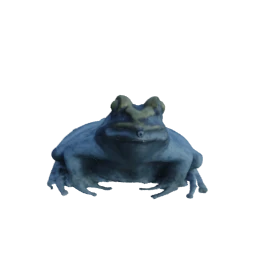
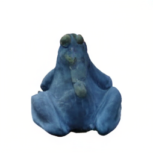
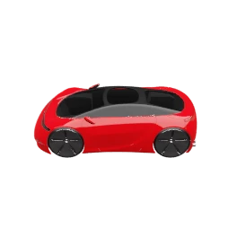
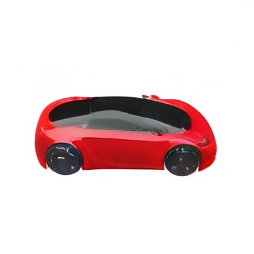

NAMVIS: Next-Scale Autoregressive Multi-View Image Synthesis
NeurIPS, 2026
project page / paper / code / bibtex
Geometry-conditioned next-scale autoregression generates consistent novel views without iterative denoising, with over 3× faster inference than the evaluated diffusion baselines.